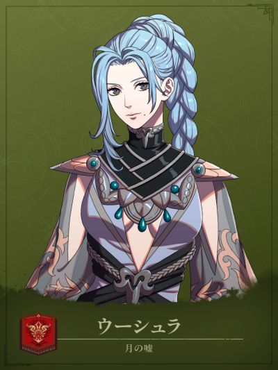

COMPANION DOSSIER
乌修拉
ウーシュラ · 月之谎
检索别名：乌修拉
喜欢什么，送什么
咖啡、棋盘游戏、书籍、绘画、花卉
喜欢的东西：诗歌、动物、阴处绽放的花、数钱
兴趣：阅读、绘画
查看送礼原文与例外 →第一部 · 各路线加入条件
- 凯伊线
- 3S / 10R ・塔利穆恩外传 ・所有问题都选择「はい」
- 迪托利希线
- 3S / 7R ・塔利穆恩外传 ・所有问题都选择「はい」
- 赛奥朵拉线
- 3S / 9R ・塔利穆恩外传 ・所有问题都选择「はい」
- 蕾达线
- —
S = 支援等级 · R = 名声等级 · — = 无法招募
查看招募原文与附加说明 →交涉要准备什么
外传＋选项所有问题都选择「はい」
先完成塔利穆恩外传，再在交涉中全部回答“是”。蕾达线不可招募。
适用：凯伊线 / 迪托利希线 / 赛奥朵拉线
怎么养，怎么转职
编辑培养建议
随队道具袋支援／剑弓补刀与探索
- 前期
- 完成本线外传与招募后，先沿已有剑／弓技能培养。个人技能让自身及周围2格友军使用道具袋，适合随主队补给和收尾；恶棍以剑或弓C备考，兼顾开锁与探索，已有合适职业时不必降回初级重练。
- 中期
- 通用过渡选森林骑士：弓B、马D，持弓命中+5，机动跟随需要补给的队友。精通「猎人之眼」只在持弓追击时攻击力+3，不会自动产生追击。迪托利希线完成「挑戦者求む！必滅のオウコ」解锁游侠后，也可按剑或弓B走步兵探索，省去额外马术；凯伊、赛奥朵拉线不默认能直接转游侠。
- 后期目标
- 第三部开放后可选探影者：集中剑或弓至A，无须双A；战技栏+3、开锁与最上级探索适合战斗兼探索。由森林骑士转回步兵会失去骑乘机动，当前更需要赶路补给时可继续现职。
- 考试与解锁
- 恶棍／森林骑士或游侠／探影者分别使用中级／上级／最上级票证，一考一票。帝都售票员中级500G、上级3000G；第三部フィーナの漁村市场最上级8000G，另留训练、武器和补考预算。技能Rank是备考方向，先确认本线开放、名声与当前合格率，不把建议等级当硬门槛。
- 取舍与限制
- 「好機+」习得后，在攻击时按（幸运÷2）%概率令伤害变为1.5倍，击杀计划仍按不触发计算。道具袋范围不等于自动治疗或全图共享；随队时检查距离与敌方覆盖。已有弓手够用时，先看是否缺补给／探索职能再投资。
这些是阶段性培养方向，并非必须逐级转职的固定链。适用难度及版本未做独立实测；优先满足当前队伍缺口。
本次新增条目经过来源页面核对，未逐项游戏内实测。没有补充明细的“交涉”仍待核验，不表示没有额外要求。